Ikon
Trailers.
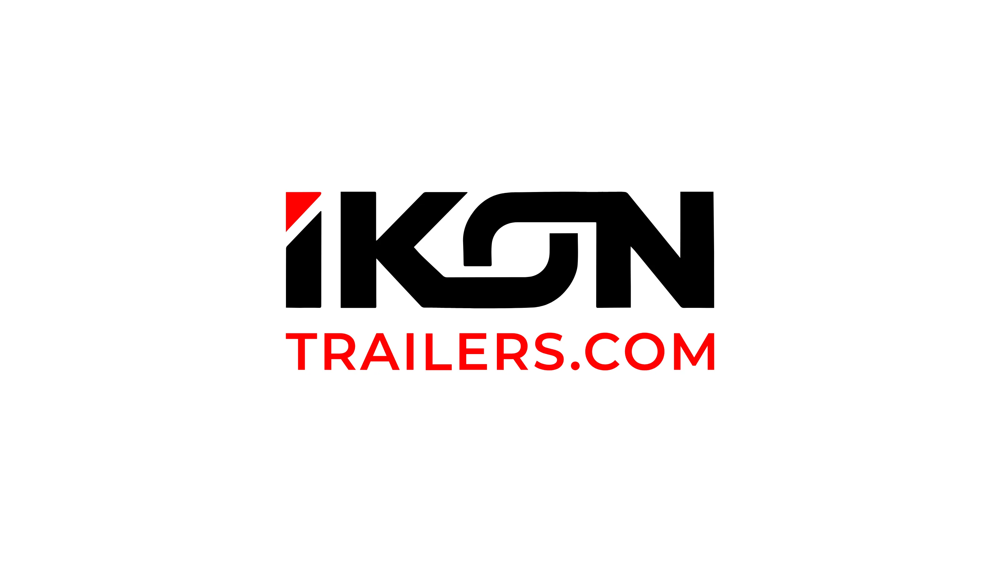
01. Executive Summary
Transcendental
Strength.
IKON Trailers is a premier heavy-duty trailer dealer based in San Antonio, Texas. I was tasked with creating an iconic identity that reflects the epic, transcendental quality of their products—from bottom and end dumps to tankers and flatbeds. The resulting brand system projects masculine sophistication and professional authority across a global dealer network.
02. Context
Situational Awareness
Based in San Antonio, IKON serves everyone from independent owner-operators to global corporations. The name IKON—derived from 'icon'—underscores a belief in providing the best trailers and services in the industrial market, requiring a brand that feels as iconic as the equipment it represents.
03. The Core Problem
Problem Definition
The challenge was to develop a mark that could symbolize heavy-duty structural integrity while remaining sophisticated. The identity needed to be versatile enough to work on aluminum and steel tankers while communicating a level of service excellence that transcends the standard industrial "shop" experience.
04. Constraints
Risk & Trade-offs
The logo had to be functional across extreme physical industrial conditions. We utilized a high-contrast palette of reds and dark neutrals to evoke a sense of power and stability, ensuring the brand remains recognizable even under heavy use in the trucking and logistics world.
05. Objectives
Success Criteria
Achieve an "Iconic" brand presence in the heavy-duty sector. Success was measured by clear differentiation from regional competitors and positive feedback from both global corporations and independent operators who value equipment density and service epicness.
06. Strategy & Thinking
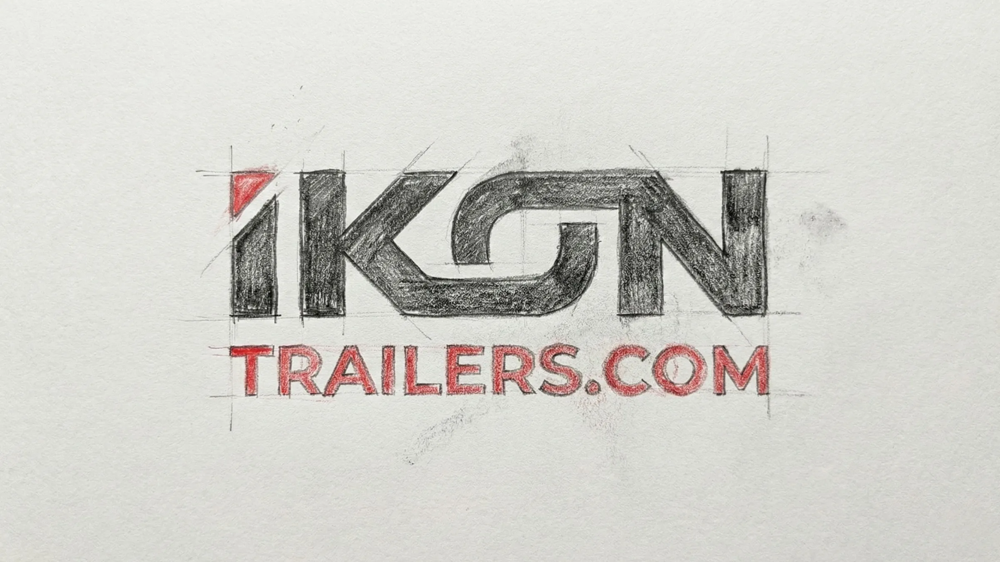
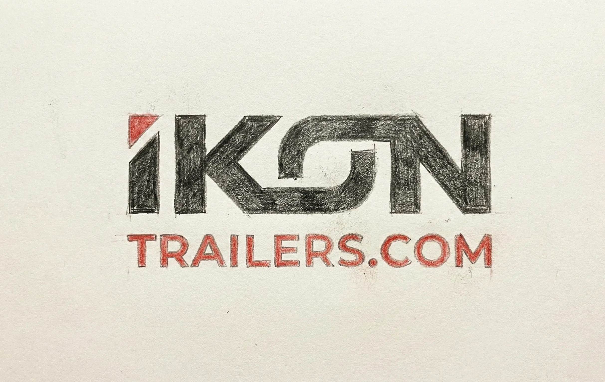
07. Design Decisions
Iconic Geometry.
A bold, technical mono-spaced font was selected to reinforce the idea of precision engineering. The "Reds & Dark Neutrals" palette was chosen to emphasize structural mass and industrial power, creating a visual weight that accurately represents heavy-duty steel and aluminum products.
System Architecture
Brand Kit.
AaBb
Space Mono (Iconic Precision)
// Fully Custom Typeface: Hand-crafted and digitized directly from original conceptual sketches to ensure a completely unique brand identity.
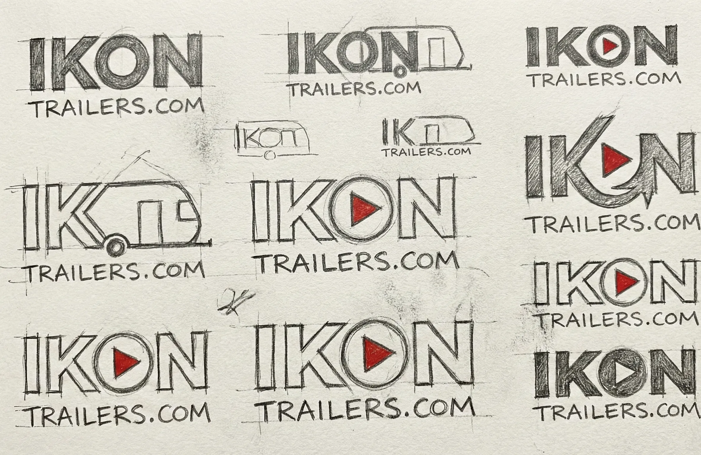
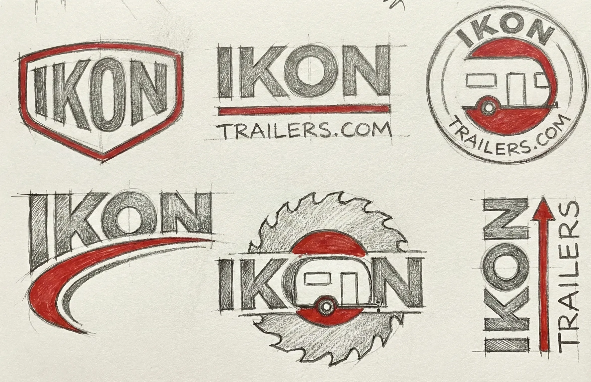
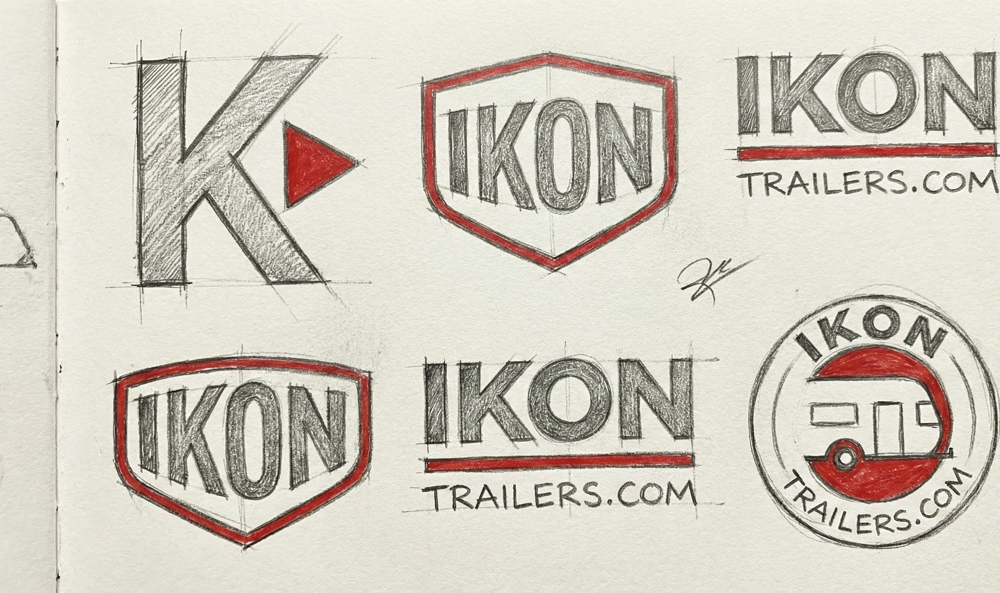
08. Execution & Deliverables
Proof of Completion
Delivered a high-durability branding package including decal specifications for various trailer types, storefront identity for the San Antonio HQ, and digital sales collateral for global dealer presentations.
09. Outcome & Impact
Was It Worth It?
The identity successfully positioned IKON as a superior alternative in the heavy-duty market. Rebranding helped unify their diverse product lines under a single, epic "Iconic" banner, improving brand recognition among corporate fleet managers and independent operators alike.
10. Reflection & Learning
Maturity Signal
Industrial branding is about physical survival and professional stability. This project taught me that even the most "heavy-duty" product deserves a sophisticated visual narrative—one that honors the epic scale of the work it performs.
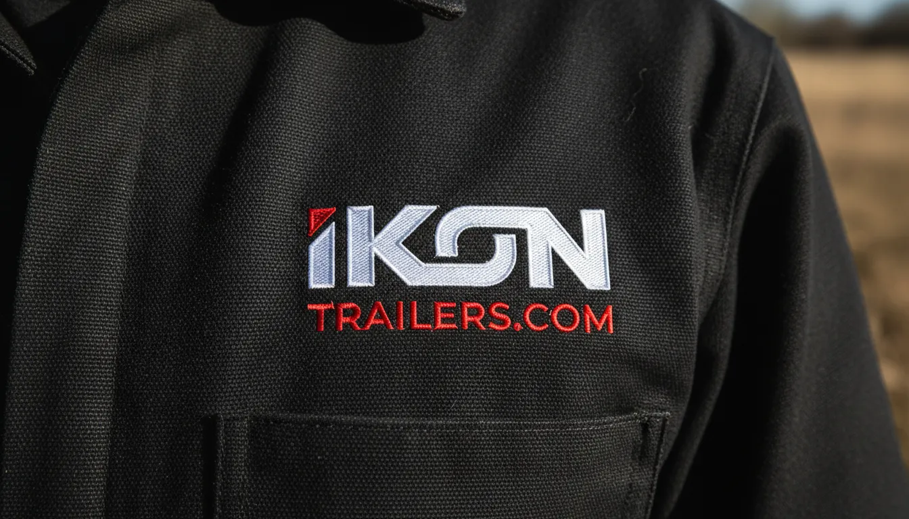
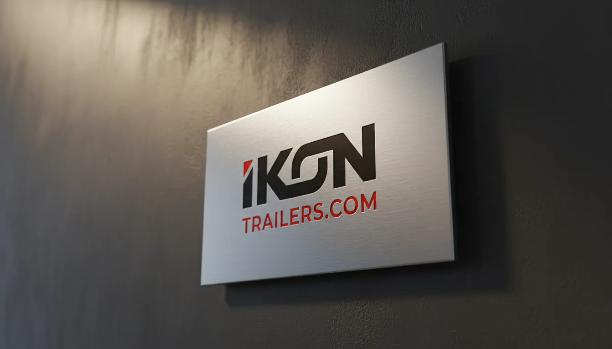
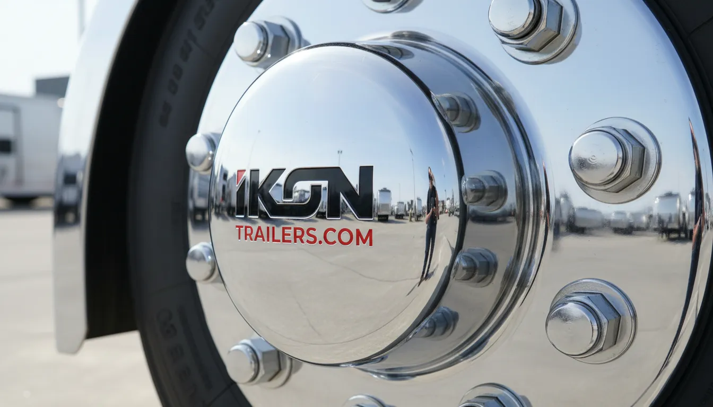
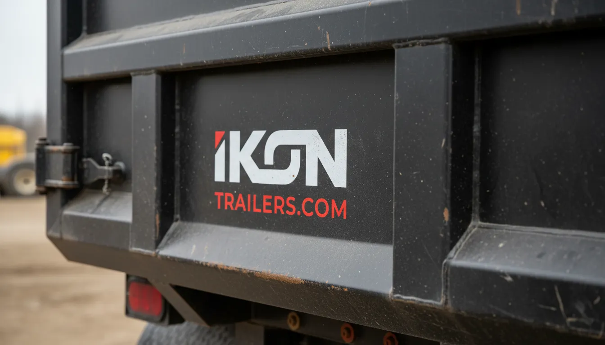
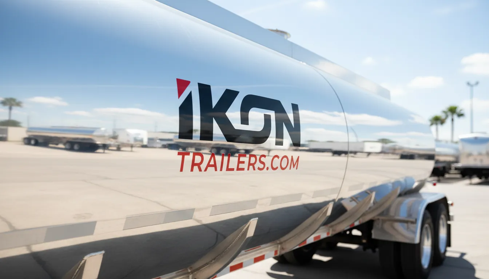
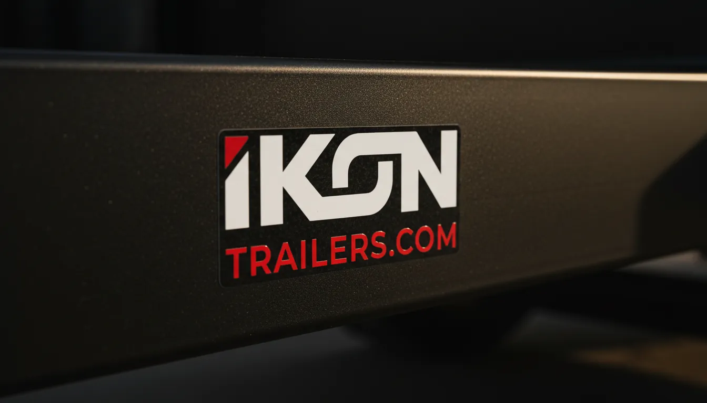
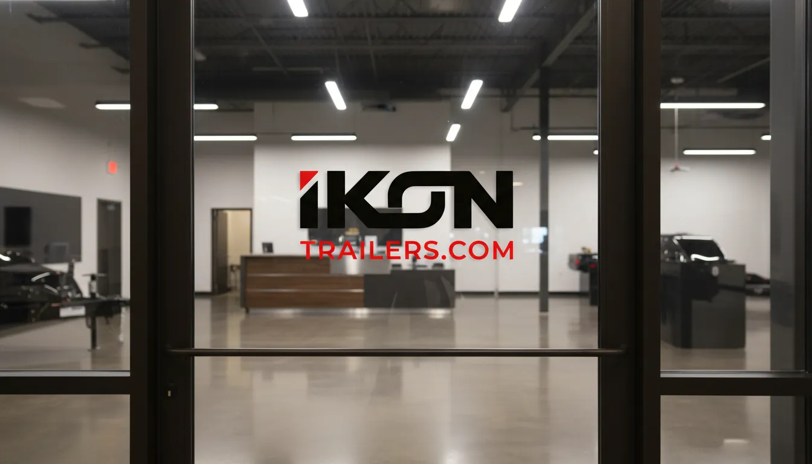
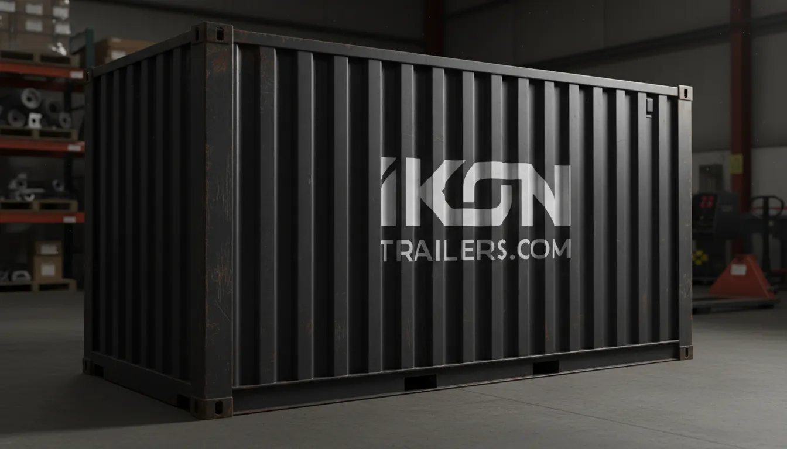
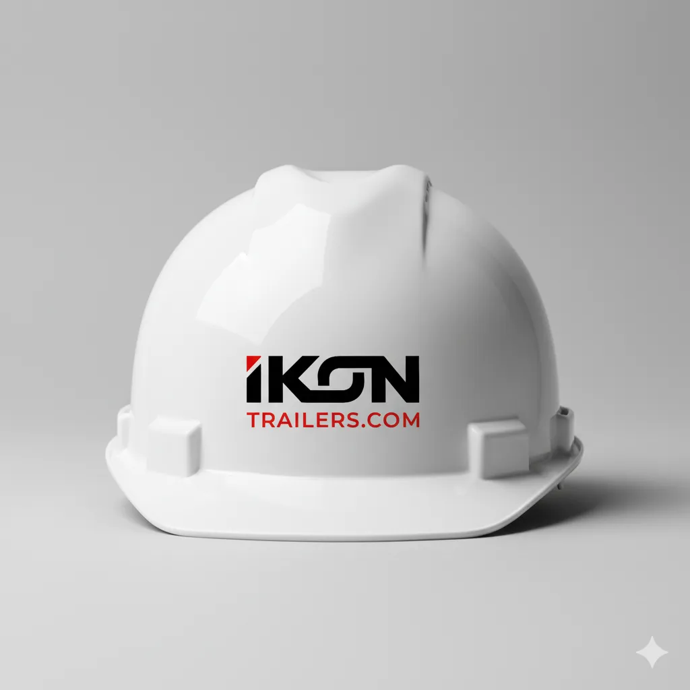